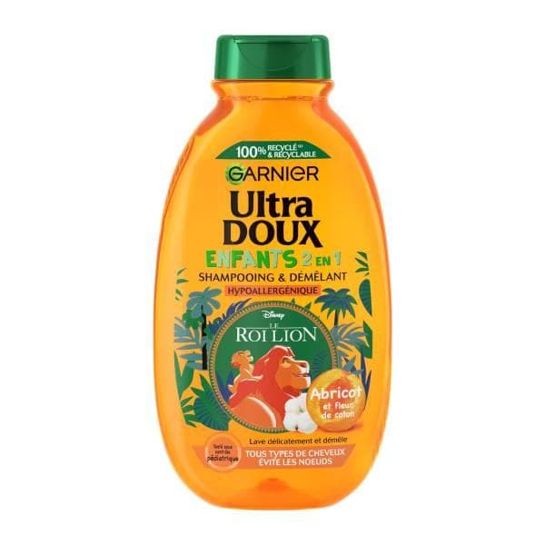

Garnier Ultra doux shampoing enfant 2en1 abricot 300ml

Description du produit
Shampooing Garnier Ultra Doux Enfants 2-en-1 enrichi en Huile d’Abricot et Fleur de Coton qui lave et démêle délicatement pour un peignage des cheveux facilité.
Caractéristiques
- Nettoie les cheveux en douceur
- Combine shampooing et démelant 2 en 1
- Ne pique pas les yeux
Informations du produit
Catégorie : Bain et toilette
Prix : 12.629 DT
Conseils d'utilisation
Utiliser les lingettes selon les indications figurant sur l'emballage.
Quantité
Retourner au catalogue